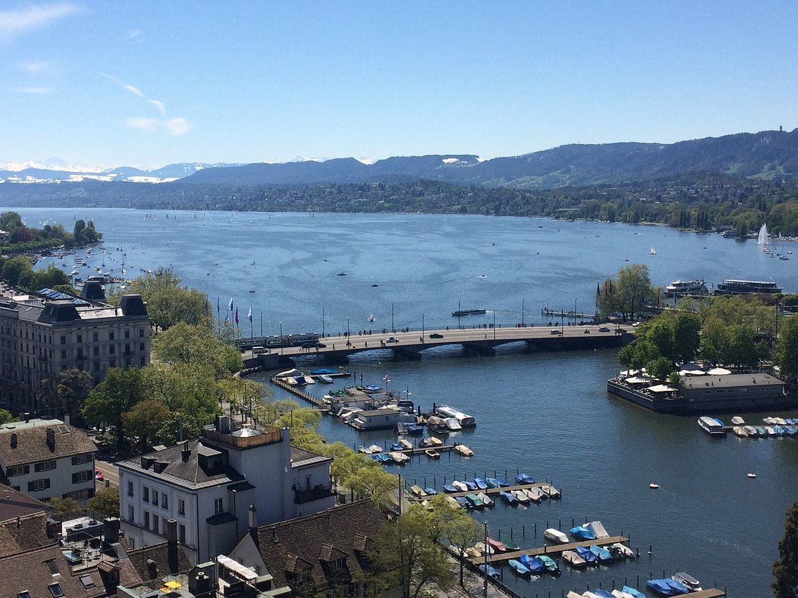

Ζυρίχη
Η Ζυρίχη είναι η μεγαλύτερη πόλη στην Ελβετία με πληθυσμός 371.767 το 2007 και πληθυσμό της ευρύτερης αστικής περιοχής να ξεπερνά το 1 εκατομμύριο. Είναι πρωτεύουσα του καντονίου της Ζυρίχης. Ο πληθυσμός της μητροπολιτικής περιοχής φτάνει τα 1,68 εκατομμύρια. Η πόλη είναι το οικονομικό και πολιτιστικό κέντρο της Ελβετίας. Σύμφωνα με έρευνες προσφέρει την καλύτερη ποιότητα ζωής στον κόσμο.
Πέμπτη — 29
|
Παρασκευή — 30
|
Πέμπτη — 29
Explore the Old Town
|
Η ιστορική καρδιά της πόλης χτυπά και στις δύο πλευρές του ποταμού Limmat. Εδώ συντεχνίες, εκκλησίες, ιστορικές πλατείες και κρυφά μέρη φωλιάζουν το ένα δίπλα στο άλλο. Η μεγαλύτερη συγκέντρωση απο club στην Ελβετία, ένα από τα πιο διάσημα εμπορικά μίλια και μια πληθώρα πολιτιστικών προσφορών. Και όλα αυτά σε ένα μεσαιωνικό υπόβαθρο. Η Παλιά Πόλη της Ζυρίχης είναι ένα πολιτιστικό, κοινωνικό και ιστορικό κέντρο. Τα μεσαιωνικά σπίτια της Ζυρίχης, τα στριμωγμένα, στενά σοκάκια, τα συντεχνιακά και δημαρχεία της περιόδου της Αναγέννησης προσφέρουν ένα ελκυστικό σκηνικό για ψυχαγωγία παγκόσμιας κλάσης. Μια περιήγηση στην Παλιά Πόλη επιτρέπει στους επισκέπτες να βιώσουν το πολύπλευρο παρελθόν της Ζυρίχης. Το σκηνικό μετατρέπεται σε μια ζωντανή ιστορία χαρακτηριστικών κτιρίων και ανθρώπων που έζησαν και έπαιξαν τη ζωή τους σε αυτά. Οι διπλοί πύργοι του Grossmünster (Great Minster) είναι το ορόσημο της Ζυρίχης. Σύμφωνα με το μύθο, ο Καρλομάγνος έχτισε τους πύργους στη θέση όπου ανακαλύφθηκαν οι τάφοι των αγίων της πόλης Felix και Regula. Άλλα αξιοθέατα που αξίζει να δείτε περιλαμβάνουν την Peterskirche (Εκκλησία του Πέτρου), η οποία έχει τη μεγαλύτερη πρόσοψη ρολογιού στην Ευρώπη, και το Fraumünster (Υπουργός της Παναγίας), που είναι γνωστό για τα βιτρό του από τους Giacometti και Chagall. |
Visist Majestic Lake Zurich

Tο σκηνικό αυτό με την πανέμορφη λίμνη της Ζυρίχης και τους ολόλευκους κύκνους, είναι ίσως το καλύτερο τοπίο της πόλης. Μπορείς να ανέβεις σε κάποιο από τα καραβάκια και να απολαύσεις ένα Lake Boat Tour ή να επιλέξεις κάποιο από τα παραλιακά καφέ ή εστιατόρια και να ζήσεις την εμπειρία πιο ήρεμα.
Δασώδεις αλυσίδες λόφων πλαισιώνουν τη λίμνη της Ζυρίχης και στις δύο πλευρές. Μπορείτε να φτάσετε από τη μια πλευρά στην άλλη με πλοίο ή διασχίζοντας το φράγμα στο Rapperswil. Μια τρίτη επιλογή είναι η εκδήλωση «Seeüberquerung» το καλοκαίρι, όταν έως και 10.000 λάτρεις του νερού κολυμπούν από το Wollishofen στο Tiefenbrunnen. Διάφορα ατμόπλοια και μηχανοκίνητα σκάφη πλέουν στη λίμνη, ενώ οι λάτρεις των σπορ μπορούν να διασχίσουν τη λίμνη της Ζυρίχης με κανό ή SUP.
Zoo of Zurich
Πάνω από την πόλη της Ζυρίχης, που εκτείνεται σε μια επιφάνεια περίπου 27 εκταρίων, βρίσκεται το μεγαλύτερο και πιο πολυσύχναστο πολιτιστικό και εκπαιδευτικό ίδρυμα της Ελβετίας: ο ζωολογικός κήπος της Ζυρίχης. Ο δημοφιλής εθνικός προορισμός εκδρομών θέλει να κεντρίσει το ενδιαφέρον των ανθρώπων για τα ζώα και να τα ενθαρρύνει να διαδραματίσουν ενεργό ρόλο στη διατήρηση της φύσης και την προστασία των ειδών. Ανακαλύψτε περισσότερα από 380 είδη ζώων σε φυσικοφανή ενδιαιτήματα, όπως το Lewa Savana, το τροπικό δάσος Masoala και το πάρκο ελεφάντων Kaeng Krachan και μάθετε πώς να τα προστατεύετε και τα φυσικά τους ενδιαιτήματα.
Love Lock Bridge
Ένα από τα πιο όμορφα μέρη της Ζυρίχης είναι ένας περίπατος πάνω από τη γέφυρα Mühlesteg που διασχίζει τον ποταμό Limmat στο κέντρο της Ζυρίχης και είναι για πεζούς. Η γέφυρα είναι γεμάτη λουκέτα - αρκετά χιλιάδες. Οι γέφυρες ενώνουν - Όπως σε μια Κοινότητα, τέτοιες γέφυρες είναι σημαντικές για να φέρνουν κοντά ανθρώπους που μπορεί να είναι απομονωμένοι στον δικό τους κόσμο.
Παρασκευή — 30
Museum Rietberg
Το Μουσείο Rietberg είναι ένα από τα μεγαλύτερα μουσεία τέχνης στην Ελβετία. Με έμφαση στις παραδοσιακές και σύγχρονες τέχνες και πολιτισμούς, έχει στη συλλογή του περίπου 23.000 αντικείμενα και 37.000 εθνογραφικές φωτογραφίες. Τα περισσότερα από τα αντικείμενα εκτίθενται δημόσια, είτε στις γκαλερί του μουσείου είτε στην ανοιχτή αποθήκη του. Το Μουσείο Rietberg είναι το μοναδικό μουσείο της Ελβετίας για μη ευρωπαϊκή τέχνη. Οι διεθνούς φήμης συλλογές του φιλοξενούν σημαντικά έργα από την Ασία, την Αφρική, την Αμερική και την Ωκεανία.
Τα αντικείμενα που συλλέγονται από τον Eduard von der Heydt αποτελούν την καρδιά μιας συλλογής που συνεχίζει να αναπτύσσεται χάρη στις μακροχρόνιες επαφές με αξιόλογους συλλέκτες, καθώς και χάρη σε ιδρύματα και δωρητές αλλά και μέσω αγορών και κληροδοτημάτων. Ανάμεσα στα κυριότερα σημεία του μουσείου είναι η κινεζική πορσελάνη από τη συλλογή Meiyintang, οι ινδικοί μικρογραφικοί πίνακες από τη συλλογή Alice Boner και η βουδιστική τέχνη των Ιμαλαΐων από τη συλλογή Berti Aschmann.
Beyer Clock and Watch Museum
"Το μουσείο ρολογιών μας Σε μια από τις πιο σημαντικές συλλογές στον κόσμο, παρουσιάζουμε σε εσάς και την οικογένειά σας θησαυρούς αντίκες και αφηγούμαστε την ιστορία της μέτρησης του χρόνου από το 1400 π.Χ. μέχρι σήμερα. Ζήστε τον θαυμαστό κόσμο των ρολογιών και τη συναρπαστική τέχνη της κατασκευής τους στην καρδιά της Ζυρίχης – στο υπόγειο του καταστήματος στην Bahnhofstrasse." - Beyer Clock and Watch Museum
Μια από τις κορυφαίες ιδιωτικές συλλογές ρολογιών στον κόσμο βρίσκεται στο Μουσείο Ρολογιών και Ρολογιών Beyer. Περίπου 260 πολύτιμα εκθέματα παρουσιάζουν την ιστορία της χρονομέτρησης από το 1400 π.Χ. μέχρι σήμερα: από ηλιακά ρολόγια μέχρι ρολόγια νερού και ρολόγια-πύργοι, αναγεννησιακά αυτόματα ρολόγια, υπέροχα ρολόγια εκκρεμούς, περίτεχνα διακοσμημένα ρολόγια τσέπης και το πρωτότυπο του πρώτου ρολογιού χειρός από χαλαζία. Παρέχονται επίσης συσκευές επιστημονικής πλοήγησης.
Μερικά πολύ εύθραυστα αυτόματα ρολόγια μπορούν επίσης να φανούν σε λειτουργία - μια πραγματική σπανιότητα. Οι εγγραφές βίντεο δείχνουν αυτά τα καλλιτεχνικά αριστουργήματα σε λειτουργία. Επιπλέον, οι επισκέπτες μπορούν να βρουν περισσότερες πληροφορίες για τα περισσότερα ρολόγια και ρολόγια που εκτίθενται σε έξι διαφορετικές γλώσσες χρησιμοποιώντας τα παρεχόμενα iPad.
Gerold Cuchi Umbrellas
Πιείτε ένα ποτό στη hipster περιοχή Kreis 5 και επισκεφθείτε τις πολύχρωμες ομπρέλες στο εστιατόριο Gerold Cuchi. Υπάρχουν πάνω από 50 κρεμαστές ομπρέλες στο Gerold Cuchi σε όλα τα χρώματα, σχέδια και μεγέθη. Ο πολύχρωμος θόλος αποτελείται από πάνω από 50 ομπρέλες η καθεμία με μοναδικό σχέδιο: πουά, ρίγες, καρό και ζωηρά λουλούδια. Ακριβώς στη γωνία βρίσκεται το Frau Gerolds Garten - ένα πολυσύχναστο μέρος (ειδικά τις ζεστές νύχτες του καλοκαιριού) με διάφορα μπαρ, εστιατόρια, ανεξάρτητα καταστήματα και υπαίθριες αυλές.
Zueghauskeller
Βρίσκεται σε ένα μικρό πλακόστρωτο στενάκι, κάθετο στην Bahnhhofstrasse και έχει όλα αυτά που χρειάζονται για να το λατρέψεις. Εκπληκτική ιστορία - ήταν αποθήκη όπλων κατά το 15ο αιώνα και εάν καθίσεις μέσα θα τα διακρίνεις παντού. Έχει το καλύτερο αυθεντικό Ελβετικό/ Γερμανικό φαγητό. Δοκιμάστε το δειγματολήπτη λουκάνικων όπου θα μπορείτε να δοκιμάσετε έξι διαφορετικούς τύπους λουκάνικων με πλάκες μπέικον. Μην ξεχάσετε να παραγγείλετε μια Eidgenoss, μια τεράστια φλεγόμενη μπύρα.